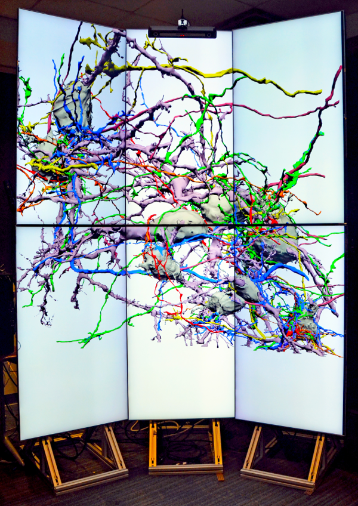
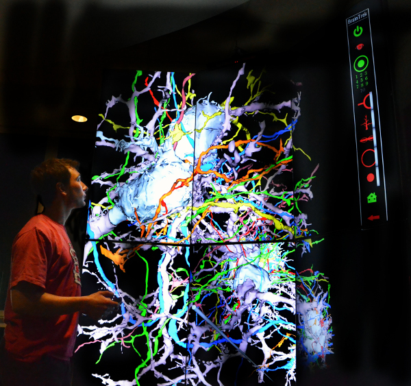
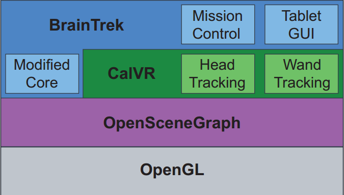
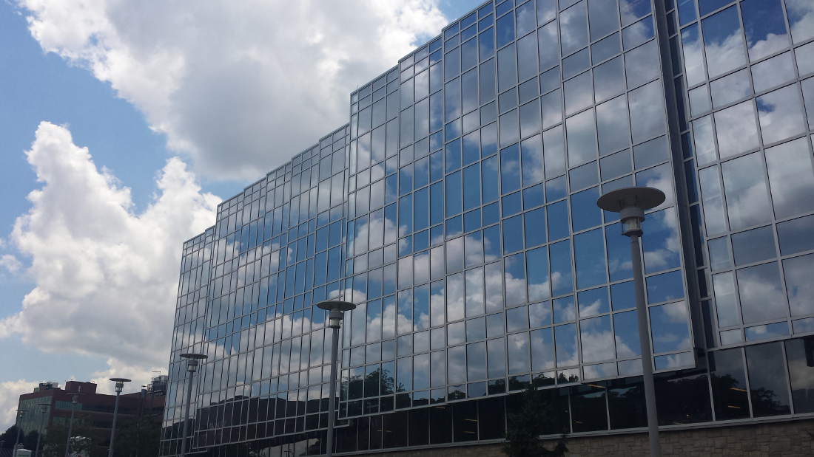

B r a i n T r e k
Navigate using your arrow keys, space bar, or by clicking the buttons in the bottom right. If you're on a touch device, simply swipe. For overview, press the ESC key.
THE PROBLEM
The high degree of complexity in cellular and circuit structure of the brain poses challenges for understanding tissue organization. These challenges are amplified for new data sets based upon new techniques for acquiring large volumes of electron microscopy data from serial sections. These techniques reveal all cells in unbiased fashion, so their segmentation generates large data sets that must be inspected and analyzed.
This is an example of the data we get using serial block face scanning electron microscopy.
By tracing each layer as we move through a section, we obtain 3D models of cells.
When models are built together in a 3D environment our data becomes large and highly involved, making it difficult to study.
THE SOLUTION

As a solution to this challenge, we have developed a 3D immersive virtual reality (IVR) data display to
present data visually in a form that facilitates human analysis.

THE CAVE
- Six 55-inch 3D enabled LCD/LED screens (LG 55LM9600)
- ART (Advanced Realtime Tracking) SmartTrack system for head and wand tracking
- Intel Core i7-3820 processor
- Two GeForce GTX 680 GPU cards
- 32GB of RAM
- CentOS 6.3
- A Nexus 7 tablet for user interaction
C
al
VR
CalVR provides the middleware framework that drives BrainTrek. Developed for CentOS, CalVR is a C++ object-oriented class hierarchy that utilizes
the OpenSceneGraph library and OpenGL to render graphic output.

CAVE FEATURES

Tablet Controls
To achieve a user friendly environment, we have developed
a tablet interface. This control system allows users to fade objects
in and out.
Tablet Controls
This analogue control mode allows the user to easily move around the
virtual world. This mode provides easy access to the "home" position
and the mini map
Tablet Controls
This model of the volume being viewed may be spun and zoomed
to manipulate the virtual world.
Where the Data Came From
This functionality allows users to view the serial block face scanning
electron microscopy images while flying around in the 3d model.
Color Coding
Cells are color coded for easy identification. Our "Legend" in the upper right hand corner allows
users to select particular cells and manipulate them
in real time. This improves the research functionality
of our cave environment.
Mini Map
To enhance the user experience we have included a mini map
and home button; this way users won't get lost. At any point
while using our cave, by clicking the mini map button, a user can
see exactly where they are with respect to full 'world' they're in.
Wand Control
Our helicopter style wand control offers a second option of how
a user may explore the loaded environment. By clicking and changing
mouse orientation, our cave equipment can track and manipulate the
view in an intuitive way. This can be used to 'hover' and 'fly' around.
Our CAVE controls are demonstrated here.
ABOUT
TEAM
LAB
PAPER
THE TEAM
Michael Morehead
Team Lead and Graduate Student
mmorehea@mix.wvu.edu
Sir Quinn Jones
C++ Guru and Lord of the Nine Data Types
qjones1@mix.wvu.edu
Jake Ferguson
Unity Developer and Height Specialist
jfergus7@mix.wvu.edu
Will Austin
Unity Developer and Child of the Internet
wiaustin@mix.wvu.edu
Stratton Spirou
Summer Intern and Disciple of the Black Arts
stratspirou@gmail.com
THE LAB

THE PAPER